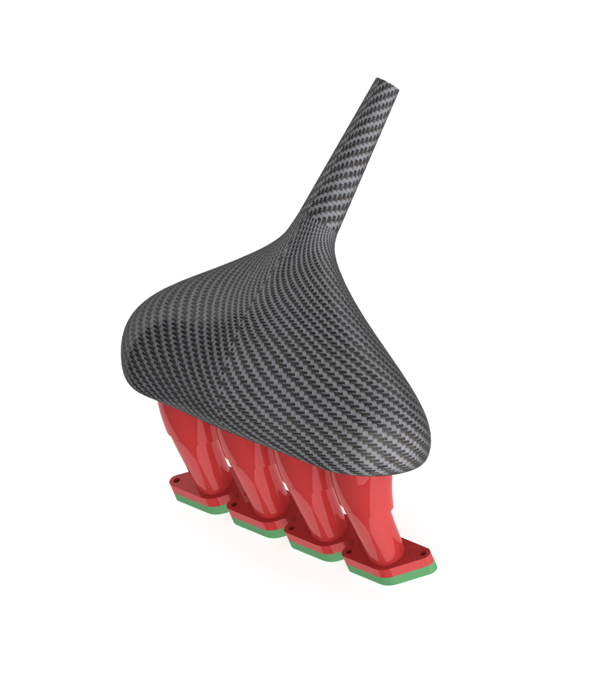
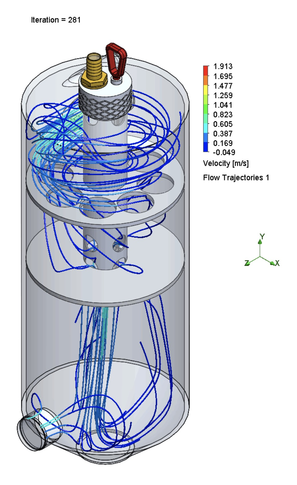

Innovation and challenges as lead powertrain engineer

Creating complex carbon fiber parts using soluble positive molds

Adding force sensors to assistive walker helps prevent non-load-bearing patients from applying too much downwards force during recovery from open chest surgery

Implementing pressure baffles in dry sump tank to reduce sloshing and oil starvation while improving dearation

Designing and manufacturing minimum viable cooling system for FSAE racing using CFD

Keeping each team member up to date with the latest part files and assembly configurations in order to accelerate design workflow